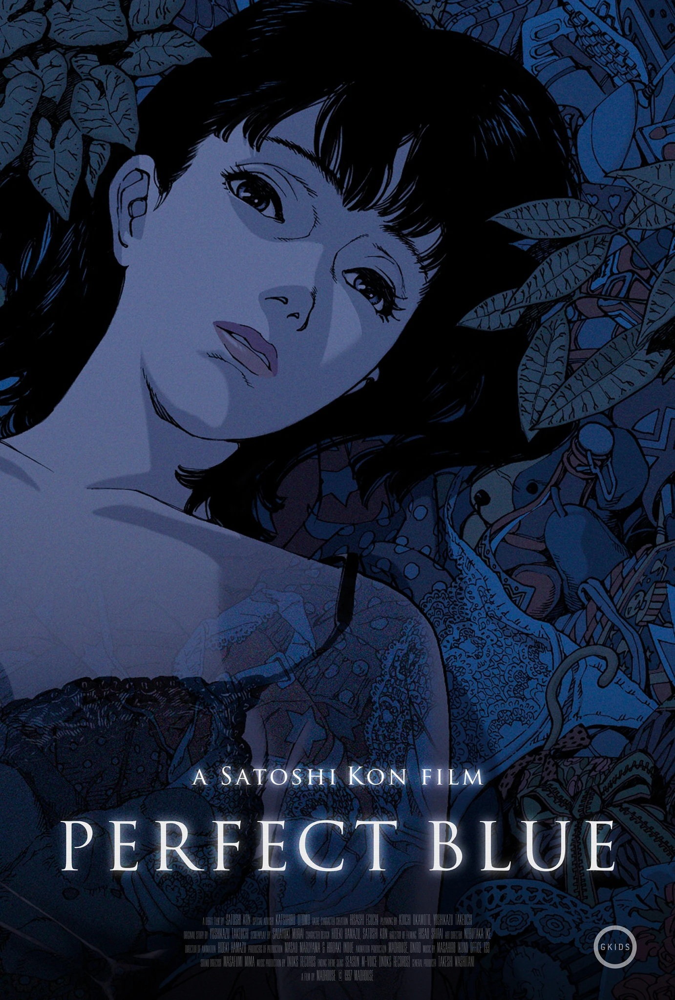

¿Qué es lo más humano qué podemos hacer? Morir por los demás. No quiero sentirme así de solo como K
Neon Genesis Evangelion: The End of Evangelion, 1997
El anime y la película que me han inspirado para estudiar cine. La soledad de Shinji, no es solo de él, sino que de todo el mundo.
Bo Burnham: Inside, 2021
Gracias Bo por haber hecho esto.
Especial de ¿comedia?
Whiplash, 2014
Que se vayan a la chucha esa gente que cree que deberiamos ser como Nieman.
Fantastic Mr Fox, 2009
Una película tan bella en todos los sentidos. Una película que me enamoró de la animación completamente. Una película que me ayudó a aceptarme a mí mismo.
Short Term 12, 2013
Todo se resume en la canción de Marcus que estás escuchando ahora mismo.
Jagten, 2012
Momento de cuestionar tus límites morales y tus principios.
Scott Pilgrim vs The World, 2010
Si tuviera que elegir ver algo para el resto de mi vida, sería esto. Scott es el simp máximo, pero la felicidad, los detalles y las risas que me obsequia Wright nadie más las puede conceder.

Perfect Blue, 1997
Mi edificio tiene 34 pisos. Vivo en el 29. No quiero que suene esta canción nunca en el ascensor.
Cinema Paradiso, 1988
Simboliza mi amor por el cine y mi amor por mi padre. Gracias papá, por mostrarme tu película favorita y entregarme tu pasión por el cine.